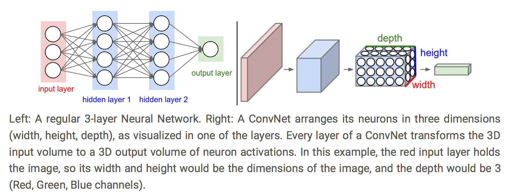

In this blog, we are going to use Convolutional Neural Network (CNN) to do image classification. The following figure shows the comparison between a 3-layer Neural Network and a simple Convolutional Neural Network. If you are interested in CNN, you can refer this paper which proposes AlexNet. 
1. A simple Convolutional Neural Network on MNIST dataset as an example.
import numpy
from keras.datasets import mnist
from keras.models import Sequential
from keras.layers import Dense, Dropout, Flatten
from keras.layers.convolutional import Conv2D, MaxPooling2D
# load data
(X_train, y_train), (X_test, y_test) = mnist.load_data()
# reshape to be [samples][pixels][width][height]
X_train = X_train.reshape(X_train.shape[0], 28, 28, 1).astype('float32')
X_test = X_test.reshape(X_test.shape[0], 28, 28, 1).astype('float32')
# normalize inputs from 0-255 to 0-1
X_train = X_train / 255
X_test = X_test / 255
# one hot encode outputs
y_train = np_utils.to_categorical(y_train)
y_test = np_utils.to_categorical(y_test)
num_classes = y_test.shape[1]
# create model
model = Sequential()
model.add(Conv2D(32, (5, 5), input_shape=(28, 28, 1), activation='relu'))
model.add(MaxPooling2D(pool_size=(2, 2)))
model.add(Dropout(0.2))
model.add(Flatten())
model.add(Dense(128, activation='relu'))
model.add(Dense(num_classes, activation='softmax'))
# Compile model
model.compile(loss='categorical_crossentropy', optimizer='adam', metrics=['accuracy'])
# Fit the model
model.fit(X_train, y_train, validation_data=(X_test, y_test), epochs=10, batch_size=200, verbose=2)
# Final evaluation of the model
scores = model.evaluate(X_test, y_test, verbose=0)
print("Baseline Error: %.2f%%" % (100-scores[1]*100))
2. Assignment
Please run the above code before you design yours. You will notice that using a CNN model gains a higher accuracy than the Neural Netowork on MNIST dataset. Design your own CNN to do Image Classification on Boat Dataset. Boat Dataset consists of 5 different types of boats:
Training Dataset (249.6 MB) Download
Class Number of images aircraft_carrier 500 banana_boat 500 oil_tanker 500 passenger_ship 500 yacht 500 In total 2500 Testing Dataset (97.1 MB, 1000 images) Download
Train your model on training dataset and test the trained model on testing dataset.
Hint